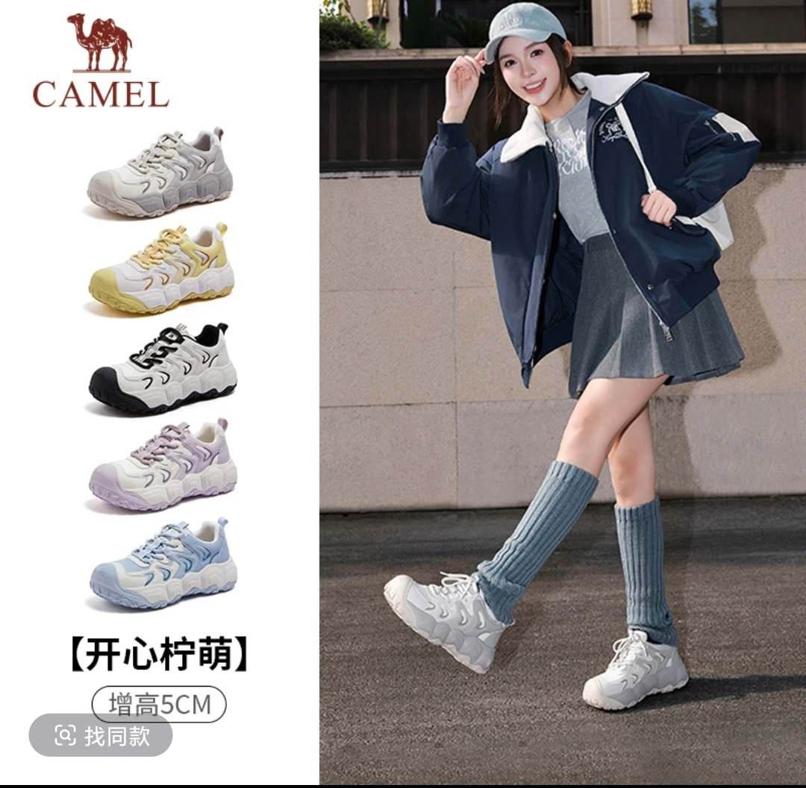
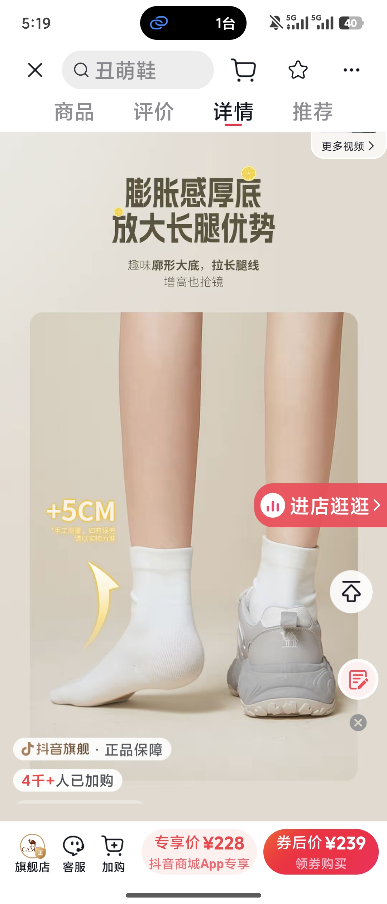

CAMEL 骆驼 · 抖音旗舰店
开心柠萌 · 厚底丑萌鞋（老爹鞋）
S4 内容策略组合报告 · 输入 = S1 买点库 × S2 人群 × S3 场景
S1 买点库 10 条
S2 人群 4 张
S3 场景 8 张
S4 → Top 8 测试方向
专享价 ¥228
4千+ 加购
好评率 95.8%


S4 是组合器，不是生成器：不发明新内容，只做「人群 × 买点 × 场景」的笛卡尔组合 → 剪枝 → 打分排序 → 输出优先测试方向。质量完全取决于 S1-S3 的原料质量——本页所有分数都来自前三步已验证的数据，不新增拍脑袋结论。
组合矩阵主攻人群 × 主攻场景 → 命中的买点（剪枝后）
| 场景 ＼ 人群 |
① 小个子显高党 |
② 穿搭出片党 |
③ 久站脚感党 |
| SC-01 面试变装 |
BP-01 显高 + BP-03 软弹ST-01 · 总分 27 |
—（穿搭党少面试诉求） |
— |
| SC-02 聚会合照 |
BP-01 显高ST-03 · 总分 26 |
— |
— |
| SC-03 开学一周穿搭 |
— |
BP-05 配色ST-02 · 总分 28 |
— |
| SC-04 周末探店 |
— |
BP-05 配色 + BP-06 联名ST-05 · 总分 23 |
— |
| SC-05 旅游暴走 |
BP-03 软弹ST-04 · 总分 24 |
— |
BP-03 软弹 + BP-09 多场景并入 ST-04 |
高亮 = 进入 Top 的测试方向（其余组合剪枝：人群与场景无自然关联）
Top 8优先测试方向（按总分排序）
ST-02 开学一周穿搭 · 同学种草TOP 1
穿搭出片党BP-05 多巴胺配色SC-03 开学/宿舍一周穿搭
拍法宿舍镜子前一周七天换装（变装卡点）+ 5 色鞋依次出镜 + 色卡陈列收尾；结尾抛钩子"同学问我鞋哪买的"。
口播："开学第一双鞋，一周穿搭不重样"
为什么先测"同学穿的是什么鞋"9 万赞种草爆款 + 变装 17.5 万赞模板，双爆款叠加；多巴胺穿搭话题 4.9 万赞验证需求。
测试指标：5 秒完播 · 点赞率 · 评论区"求链接"
ST-01 面试变装 · 日常隐形增高TOP 2
小个子显高党BP-01 增高显高 + BP-03 软弹SC-01 面试/入职变装
拍法变装卡点：先穿 7cm 恨天高配正装扶墙皱眉 → 换丑萌鞋同套正装站直显长；站姿/步伐对比。
口播："面试别穿恨天高，显高又不累才是赢家"
为什么先测面试变装 4.9k 赞现成模板；小个子 × 正装 × 显高三合一真实需求（158 小个子正装 327 赞）；"5cm 日常款"差异化打"10cm 夸张款"。
测试指标：5 秒完播 · 进房率 · "显高"相关评论占比
ST-03 聚会合照 · C 位之争TOP 3
小个子显高党BP-01 增高显高SC-02 聚会合照 C 位
拍法合照现场快切 + 同机位光脚/穿鞋腿长对比；"被安排站后排踮脚"的共情开场。
口播："合照永远站后排？不是你的问题，是鞋的问题"
为什么先测矮子乐合集 6.6k 赞 + 增高合集 8.5k 赞，"显腿长"是品类第一高频诉求；场景共情强、评论区易自报身高。
测试指标：5 秒完播 · 评论区互动 · 主页进店率
ST-04 旅游暴走 · 日行万步TOP 4
小个子 + 久站脚感党BP-03 软弹 + BP-09 多场景SC-05 旅游暴走
拍法景区暴走跟拍 + 同行穿皮鞋揉脚踝对比 + 亮手机步数 2 万+ 收尾。
口播："日行万步不累脚，旅游暴走就穿它"
为什么先测旅游暴走鞋 1.8k 赞 + 徒步 4 万步 4.2k 赞；"鞋不舒服毁一天心情"是真实痛点原话；软弹数据（13.3%/39.9%）可实证。
测试指标：5 秒完播 · 完播率 · 收藏率（攻略属性）
ST-05 周末探店 · 丑萌出片TOP 5
穿搭出片党BP-05 配色 + BP-06 联名SC-04 周末探店出片
拍法低机位鞋+穿搭特写 + 闺蜜问答互动；多色鞋搭同一条裙子出片对比。
口播："丑萌丑萌的，拍照自带话题"
为什么先测骆驼丑萌穿搭多条 1k+ 赞（1300/1196/2086/3239）——已有多条自然流量验证，缺的是统一模板放大。
测试指标：点赞率 · "求链接"评论 · 主页进店率
ST-06 办公室久站 · 下班脚不酸TOP 6
久站久走脚感党BP-03 软弹 + BP-10 透气SC-07 办公室久站
拍法讲台/柜台站一天，下班脱鞋脚踝不酸 vs 以前瘫沙发揉脚；软底回弹特写，话术带"回弹+支撑"数据。
口播："站一天脚不酸？这双鞋真的能救"
为什么先测通勤 2 万步 1.4 万赞验证"久站"需求；教师/导购人群可精准投放；注意"踩屎感伤足弓"科普风险——话术必须带支撑。
测试指标：5 秒完播 · 评论区"我是老师/导购"自报职业占比
ST-07 雨天通勤 · 防滑占位TOP 7
叠加：雨天通勤党BP-04 抓地防滑SC-06 雨天通勤
拍法湿滑地面实拍 + 鞋底纹路特写 + 别人扶墙慢挪主角大步走。
口播："下雨天也能放心走"
为什么先测防滑是测评高频附加词但几乎无人单独立意——讲了的占位；雨季（华南 3-5 月）前是窗口期。
测试指标：差异化占位 · 蓝海词搜索量变化
ST-08 宽脚试鞋 · 商家没发现的蓝海待确认
宽脚 / 大码党BP-03 软弹 + BP-10 透气SC-08 宽脚试鞋
拍法一镜到底开箱：40 码宽脚女生套上鞋，脚趾自由活动不挤；"39 码也不像大帆船"。
口播："宽脚拇外翻的姐妹，这双终于不挤了"
为什么先测本款已有"39 码不像大帆船"1.2k 赞真实好评；"大码不显脚大"571 赞、拇外翻话题 1.3 万赞——内容侧证据足，只差商家确认鞋楦宽度；确认后立即升级主攻。
测试指标：开箱完播 · "宽脚/拇外翻"评论占比 · 退货率（宽脚人群是关键）
执行第一周测试排期建议（单变量 A/B）
| 优先级 | 内容方向 | 测试变量 | 对照 |
|---|
| 第一批（周一） | ST-02 开学一周穿搭 | 变装卡点节奏 | 色卡陈列 vs 变装混剪 |
| 第一批（周二） | ST-01 面试变装 | 前 2 秒钩子 | 恨天高皱眉 vs 直接上脚对比 |
| 第一批（周三） | ST-03 聚会合照 | 共情开场 | 踮脚画面 vs 数据开场 |
| 第二批（周四） | ST-04 旅游暴走 | 步数收尾 | 步数截图 vs 揉脚对比 |
| 第二批（周五） | ST-05 周末探店 | 闺蜜问答钩子 | 问答 vs 纯展示 |
| 第三批（周末） | ST-06 / ST-07 | 人群覆盖验证 | 久站实测 vs 防滑占位 |
规则：同一组只改一个变量；至少同时比较 5 秒完播、进房率、点赞率；跑 7 天看数据再决定扩量。
待商家确认（决定 ST-08 是否升级）：① 鞋楦宽度是否适合宽脚/大码人群（39-42 码实际楦宽）② 透气材质是否属实（BP-10 转正式）③ 免系鞋带/一脚蹬是否属实（内容侧高频提及但商品资料未写）。三项确认后，宽脚蓝海方向可直接进入主攻梯队。